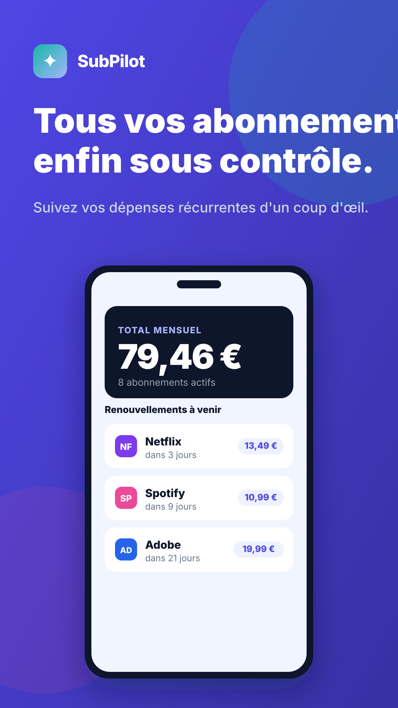
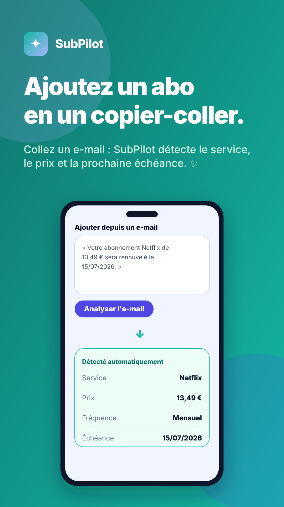
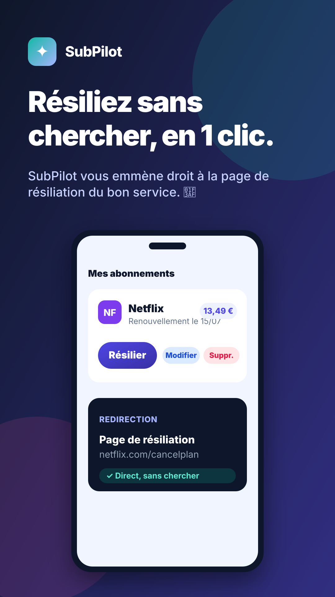

Aperçu des 4 visuels. Pour exporter en PNG : voir la note en bas.



.svg directement dans Chrome (il s'affiche en plein écran, net), puis fais une capture ;
ou utilise un convertisseur en ligne (« SVG to PNG ») ; ou clic droit sur l'image ci-dessus → « Ouvrir l'image dans un nouvel onglet » puis capture.
Les SVG sont vectoriels : ils restent nets à n'importe quelle taille.